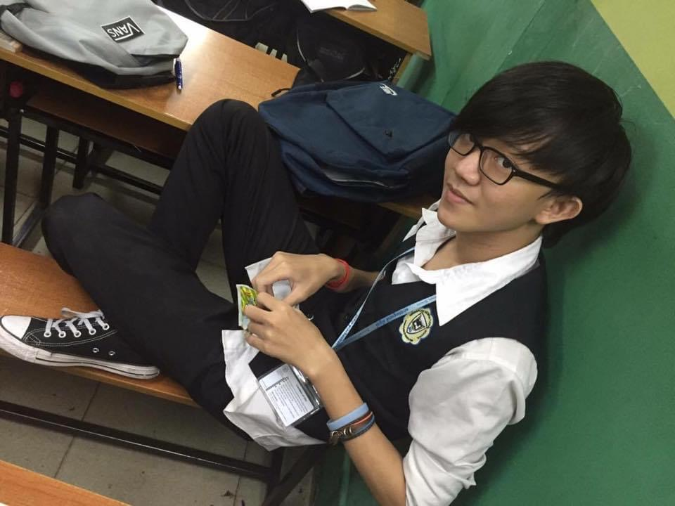
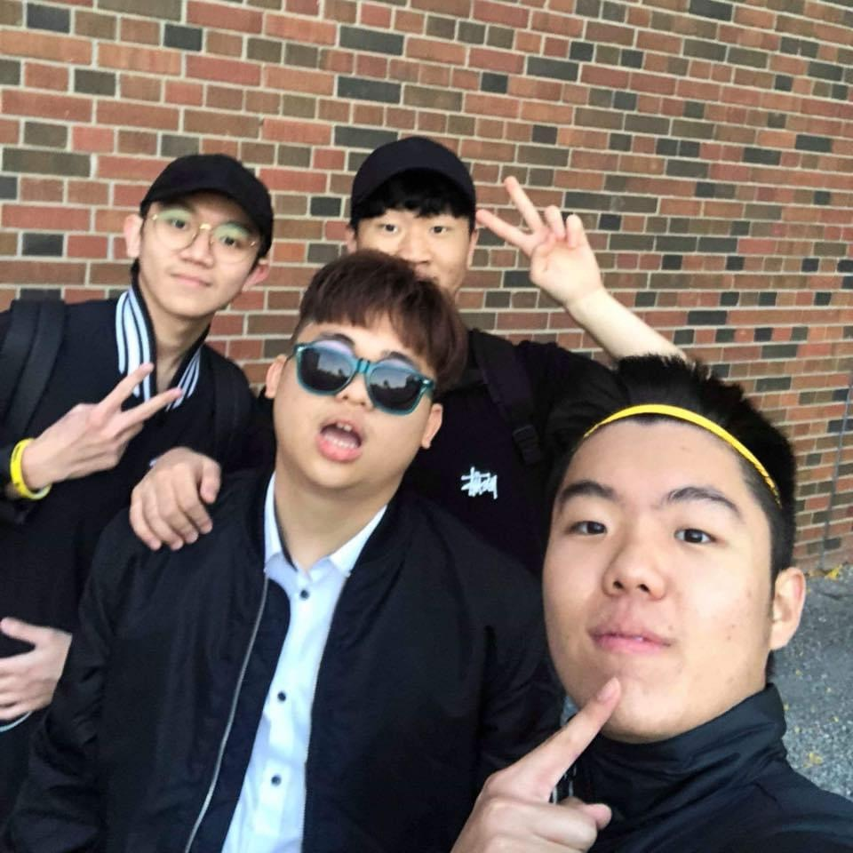

My Life
Childhood
My family was quite at the lower-middle income family so the income was a bit on the low side but we were content with our life back then. We got enough food, enough supplies, and we weren't materialistic so our needs were little.
Teenager Life


I was also a quiet kid in my teenager days. Even though I didn't focus fully in school, I always managed to stay in th top 8 of the class. I surprisingly had quite a lot of friends even though I was an introvert. I didn't know what I wanted to do either so I usually just spent my time on mobile game. I went to finish my 2 years of high school in Canada and I can say that it was quite a challanging two years of my life since I have to be responsible for everything and be independent at the same timea all on my own
Adult Life
Entering adulthood, I had to quit quite a lot of games and find a career of my own. I was always around technology even when I was a kid so I tried teaching myself web development and somehow managed to be in the development field. I currently go to a university while working to make my own spending.
Future Goals
Tech is a huge world so I'm looking to boarden my vision in the field but firstly is to become a full-stacked web developer before I graduate